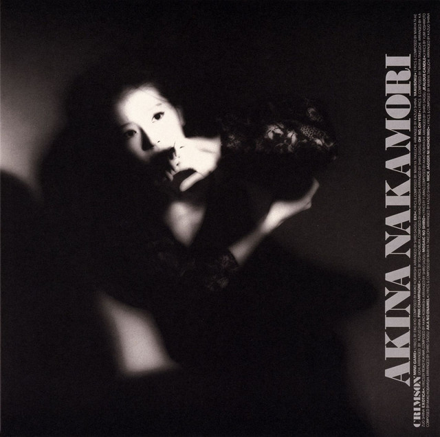

CityPop
CDs
Burning CDs
What is CityPop?
Emerging in the late 1970s from Japan, CityPop is unofficially defined as a subgenre of J-pop (Japanese Pop) known for it's aesthetic qualities. CityPop is most recognizable through its retro visuals and bright colour palette. Containing upbeat and soulful elements, many songs of the genre can trace influences from West Coast pop, soft rock, funk, disco, R&B, and boogie. Most notable CityPop artists include:
| First Name |
Last Name |
|
Akina
|
Nakamori
|
|
Mariya
|
Takeuchi
|
|
Miki
|
Matsubara
|
|
Tatsuro
|
Yamashita
|
|
Tomoko
|
Aran
|
|
Toshiki
|
Kadomatsu
|
For more information on CityPop:
Wikipedia - CityPop
Favourite Album CityPop Album:
Akina Nakamori - Crimson

Why CDs?
Commonly associated with the nascent technologies of the time such as the Walkman, cassette decks and FM stereos, one of CityPop's defining mascots is undoubtable the cassette tape. However, while aesthetically pleasing, the cassette is generally falls behind in terms of sound quality and convenience. Unfortunately, due to its diminished use, cassette tapes are less common these days. This applies as well to cassette players or cars with built-in cassette decks. For those who prefer an older analog sound and nostalgic feel, the cassette is an excellent format for music. For the sake of convenience and sound quality, while not sacrificing as much nostalgic value, I have opted for the CD.
Gaining popularity in the 1980s following the decline of cassette tapes, CDs reach a nice middle ground for those not quite ready to switch completely online. To individuals who value clean and accurate sound reproduction, the CDs is an amazing alternative to older formats. With a range of 96 dB, compared to cassettes with 50-75 dB, CDs also have the advantage of being better at differentiating between loud and quiet sections of a recording. Additionally, CDs are able to reproduce a wider range of frequencies, with a wider frequency response at 2Hz - 21 Hz. In contrast, the cassette tape is only capable of 20 Hz - 20 kHz. Another factor is cost. Due to the rarity of quality cassette players/recorders, most record labels and artist have opted to rerelease their music as CDs instead of cassettes. Saving cassette tape rereleases for special anniversaries or events, scarcity in product leads to increased prices and stock hording.
More CDs!
Unfortunately, even rereleases in the right language can be rare for certain CityPop artist. When your options are eBAY and Facebook Marketplace where listings go as high as 100 USD for preowned CDs, it is easy to get discouraged. Fortunately, I love pirating :D
Burning CDs
Burning music onto a CD is a straightforward process, but it depends on whether you want to create an Audio CD (which works in standard CD players) or a Data CD (which stores MP3 files and works on computers or MP3-compatible players). To make things simple, I've opted for a step-by-step guide for Audio CDs. Before we begin, you'll need a couple things:
- A blank CD-RW
- A computer with a CD/DVD burner (an external attachment works as well)
- Music files (MP3, WAV, FLAC, etc.)
- CD burning software (Windows Media Player, iTunes, or third-party software like ImgBurn or CDBurnerXP)
Steps:
- Insert the blank CD-RW
- Place the blank CD-R or CD-RW into your computer's CD/DVD drive
- A prompt may pop up asking what to do—close it if you're using specific software
- Open Windows Media Player (WMP)
- Press Win + S, type "Windows Media Player," and open it
- Click on the "Burn" tab on the right panel
- Set Up for Audio CD
- Click the Burn options dropdown (small icon in the top-right corner)
- Select "Audio CD" (not Data CD or DVD)
- Music Files
- Drag and drop the songs from your computer into the burn list (right panel)
- Make sure the total duration is under 80 minutes (standard CD limit)
- Rearrange the order if needed
- Start Burning
- Click "Start Burn"
- The process may take a few minutes
- Once finished, the CD will eject automatically
- Test Your CD
- Try playing it in a CD player to ensure it works